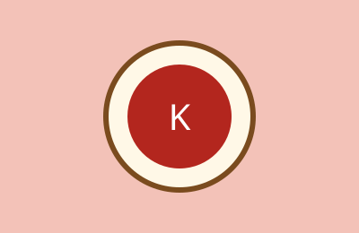

Pepián

Recado espeso de especias, chile y semillas, servido con pollo o res.
Ingredientes
- 1 pollo en piezas
- Tomate, chile guaque y chile pasa
- Semillas de pepita y ajonjolí
Recado espeso de especias, chile y semillas, servido con pollo o res.
Guiso verde de pollo con tomatillo, cilantro y pepita.

Caldo de pavo originario de Alta Verapaz, de color rojo intenso.
| Plato | Proteína | Tiempo |
|---|---|---|
| Pepián | Pollo o res | 90 min |
| Jocón | Pollo | 60 min |
| Kak'ik | Pavo | 120 min |